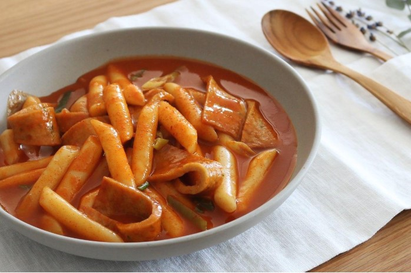

☞떡볶이가 국민분식이 된 이야기☜
우리가 쉽게 접하고 맛있게 먹을 수 있는 떡볶이

하지만 예전에는 궁중음식이었다고 하는데요.
조선시대의 떡볶이는 간장에 고기와 떡과 각종 채소를 볶아 만들거나, 찜으로 만들기도 하는 간장 떡볶이였습니다. 이 간장떡볶이를 어떻게 하여 지금의 떡볶이가 되었을까요?
궁금하지 않다구요? 아 몰라 그냥 보세요. 볼려고 들어왔잖아.
1953년, 마복림 할머니께서 가족과 함께 중국 음식점에 가게 되었다고 합니다. 당시 값비싼 중국음식을 쉽게 접할 수 없었지만 그날은 중국집이 개업식을 하고있어 공짜 떡이 있었다고합니다. 가래떡을 집어 먹으려고 한 순간! 에구머니나! 실수로 짜장면에 떡을 떨어뜨렸다고합니다.
하지만.. 그 짜장면의 춘장이 묻은 떡의 맛이 의외로 좋아서 "고추장"은 어떨까.. 라고 생각하며 고추장 떡볶이를 생각하게 되었다 합니다.
같은해.. 마복림 할머니께서는 신당동에서 길거리 음식점을 차려 자신이 영감을 받아 제작한 고추장 떡볶이 장사를 시작하게 되었죠. 처음에는 떡과 야채 고추장 춘장을 버무린 요리였다고 합니다. 하지만 시간이 지나면서 어묵이 추가되고 춘장이 제외되는 등 변화들이 생기면서 지금의 고추장 떡볶이가 완성이 되었죠. 이러한 떡볶이가 점점. 전국으로 퍼져나가면서 마복림 할머니의 냄비에 재료를 넣고 손님이 직접 조리하며 먹는 스타일의 즉석떡볶이와는 달리 분식집형 떡볶이가 생겨났다고합니다. 하지만.. 전국으로 퍼져나가기전 즉 1970년대 초반까지의 떡볶이는 신당동만의 명물로 머물러 있었습니다.
어떻게 하여 떡볶이가 전국으로 퍼져나갔는가? 두 가지의 이유가 있었다고 합니다. 하나는 당시 '임국희의 여성 살롱'이라는 인기 라디오 방송에 떡볶이가 소개되면서 이곳저곳 떡볶이 가게들이 생기기 시작했다고 합니다. 또 하나의 이유는 떡볶이집 DJ들 덕분이라고 합니다. 떡볶이집 한 곳에서 DJ를 고용해 손님들의 신청곡을 주었다고 하는데, 그것이 엄청난 인기를 끌게 되었다고합니다. 그것이 전국으로 퍼져 DJ가 있는 떡볶이집들이 수없이 생겨났고, 그 인기는 하나의 문화가 되어 떡볶이는 국민 분식으로 굳건히 자리를 잡을 수 있었다고합니다.
어떠셨나요? 지루하다고요? 식상하다고요? 그럴 수 있지..
그러면 끝까지 보신 당신을 위해서 소소한 놀이를 하나 준비해 보았습니다.